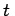
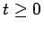
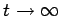
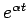
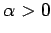
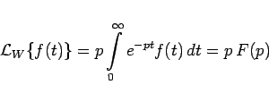

Inhalt Index DeskTop Bronstein

 Integraltransformationen Laplace-Transformation Eigenschaften der Laplace-Transformation Laplace-Transformierte, Original- und Bildbereich
Integraltransformationen Laplace-Transformation Eigenschaften der Laplace-Transformation Laplace-Transformierte, Original- und Bildbereich


ordnet einer gegebenen Funktion f(t) der reellen Veränderlichen , Originalfunktion genannt, eine andere Funktion F(p) der komplexen Veränderlichen p zu, die Bildfunktion genannt wird. Dabei wird vorausgesetzt, daß die Originalfunktion f(t) in ihrem Definitionsbereich , dem Originalbereich, stückweise glatt ist und für  nicht stärker als  mit  gegen  strebt. Der Definitionsbereich der Bildfunktion F(p) wird Bildbereich genannt.
strebt. Der Definitionsbereich der Bildfunktion F(p) wird Bildbereich genannt.
Häufig wird in der Literatur die LAPLACE-Transformierte auch in der WAGNERschen oder LAPLACE-CARSONschen Form
|  | (15.6) |
eingeführt (s. Lit. 15.15).